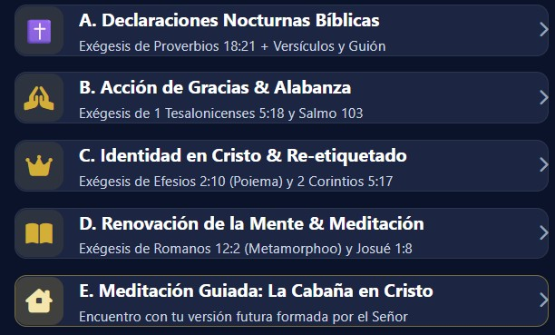
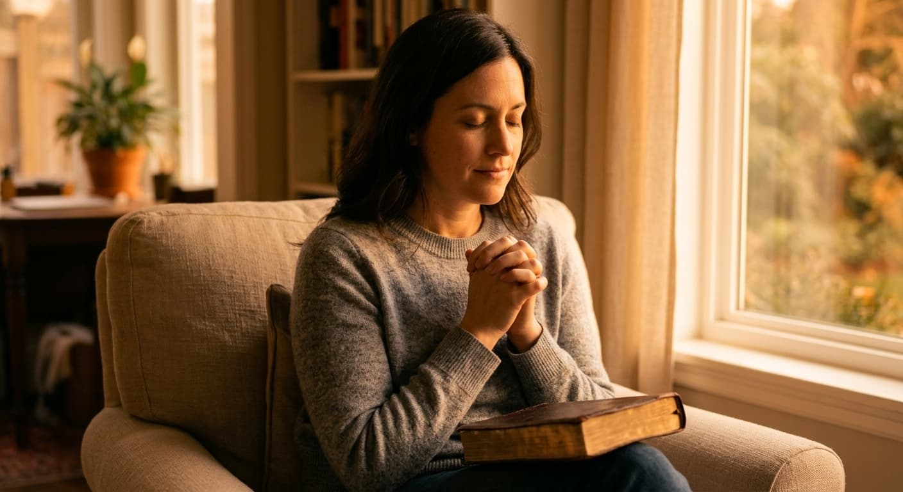

Sanación emocional y espiritual: cómo encontrar paz interior
Un recorrido para soltar el agotamiento, renovar la mente y descansar en la presencia de Dios.
Vivimos corriendo. Corremos al trabajo, corremos con las responsabilidades, corremos para cumplir expectativas… y, sin darnos cuenta, terminamos corriendo lejos de nuestra propia paz.
En medio del ruido, la presión y la incertidumbre, muchas personas cargan ansiedad, insomnio, culpa, miedo y un agotamiento que nadie ve, pero que se siente en el alma. Ese desgaste silencioso afecta la salud emocional y aleja al corazón de la quietud que Dios desea para cada uno de Sus hijos.
La buena noticia es esta: la sanación emocional y espiritual no se encuentra escapando del mundo, sino regresando a la presencia de Dios.
Y la paz es el principio de la historia. La Biblia está llena de personas que oraron y vieron a Dios traer la respuesta: a veces pronto, a veces después, y muchas veces de una forma que no esperaban. Por eso este artículo no habla solo de descansar, sino de descansar mientras perseveras.
Las heridas del alma no siempre se sanan con soluciones rápidas ni con fuerzas humanas. Requieren un reencuentro genuino con el Creador, una renovación profunda del pensamiento y la disposición de permitir que Su Palabra transforme lo que hoy parece roto, confuso o pesado.
Este artículo es una guía de reflexión espiritual y no sustituye la atención de un psicólogo o un médico. Si la ansiedad, la tristeza o el insomnio son constantes, busca también apoyo profesional.
Cómo sanar emocionalmente desde la fe
Para sanar el corazón y proteger la mente frente al caos del entorno, es necesario crear un espacio sagrado de conexión espiritual. No se trata de una rutina religiosa más, sino de un encuentro diario con Aquel que restaura, ordena y sostiene.
🌱 Renueva tu entendimiento
Romanos 12:2 nos invita a no conformarnos con los patrones de este mundo. Esto significa romper con los ciclos de temor, culpa, comparación y ansiedad, y comenzar a alimentar la mente con las verdades eternas de la Escritura.
“No os conforméis a este siglo, sino transformaos por medio de la renovación de vuestro entendimiento, para que comprobéis cuál sea la buena voluntad de Dios, agradable y perfecta.”
Romanos 12:2 (RVR1960)
🛡️ Activa tu identidad en Cristo
No eres el resumen de tus errores, ni las etiquetas que otros pusieron sobre ti, ni las heridas de tu pasado. Eres una creación intencional, amada por Dios y llamada a vivir bajo Su gracia, Su propósito y Su restauración.
“Así que ya no eres esclavo, sino hijo; y si hijo, también heredero de Dios por medio de Cristo.”
Gálatas 4:7 (RVR1960)
“¿Quién acusará a los escogidos de Dios? Dios es el que justifica. ¿Quién es el que condenará? Cristo es el que murió; más aun, el que también resucitó, el que además está a la diestra de Dios, el que también intercede por nosotros.”
Romanos 8:33-34 (RVR1960)
✨ Eleva una oración para la ansiedad y el insomnio
La oración nocturna, la declaración de la Palabra y la intercesión ayudan a aquietar el espíritu antes de dormir. En lugar de acostarte con la mente llena de preocupaciones, puedes entregar tus cargas al Padre y descansar bajo Su protección.
🌅 Persevera: Dios responde y hace milagros inesperados
Descansar en Dios no significa dejar de esperar una respuesta. La Biblia muestra que Dios escucha y responde, aunque no siempre en el momento que imaginamos. Ana derramó su alma delante de Dios pidiendo un hijo, y Dios le respondió (1 Samuel 1). A Daniel se le dijo que su oración fue oída desde el primer día, aunque la respuesta tardó en llegar (Daniel 10:12-13). Y Jesús enseñó que es necesario orar siempre, y no desmayar (Lucas 18:1).
“Clama a mí, y yo te responderé, y te enseñaré cosas grandes y ocultas que tú no conoces.”
Jeremías 33:3 (RVR1960)
Reflexión: Dios no te pide que adivines, te invita a clamar. Cada oración es una puerta abierta, y Él promete responder.
“No nos cansemos, pues, de hacer bien; porque a su tiempo segaremos, si no desmayamos.”
Gálatas 6:9 (RVR1960)
Reflexión: el tiempo de Dios no siempre coincide con el nuestro. Perseverar no es quedarte inmóvil, sino seguir orando y dando pasos mientras confías en que llegará la cosecha.
De la angustia a la quietud: la historia de Daniela
Daniela llegaba al final del día con el cuerpo agotado y la mente todavía encendida. Las responsabilidades, la preocupación por su familia y los pendientes se acumulaban incluso cuando todo a su alrededor estaba en silencio.
Lo más difícil no era solo lo que sentía, sino cómo comenzaba a responder: una palabra impaciente, una conversación que prefería evitar, una decisión tomada desde el cansancio. No quería seguir llevando esa carga a sus relaciones ni terminar cada noche reprochándose lo ocurrido.
Decidió comenzar con algo sencillo: apartar unos minutos para orar, leer la Palabra y hablar con Dios con honestidad, sin intentar aparentar que todo estaba bien.
No desaparecieron las dificultades de un día para otro. Pero esa pausa se convirtió en una oportunidad para reconocer lo que llevaba dentro y reflexionar antes de actuar.
Para Daniela, volver a Dios no significó dejar de tener problemas, sino aprender a no enfrentarlos desde el mismo lugar de agotamiento y soledad.
Y aunque las dificultades no se resuelven en un día, la Biblia está llena de historias donde Dios obra en medio de los procesos y hace milagros inesperados cuando le entregamos nuestras cargas. Dios responde: a veces pronto, a veces después, y a veces de una manera que no imaginábamos. Daniela aprendió a perseverar, y que las cosas, en Su tiempo perfecto, comienzan a acomodarse y a tomar un nuevo rumbo.
Una pausa antes de decidir puede ser un nuevo comienzo
Quizá tú también has terminado un día pensando: «No quería responder así» o «¿Por qué volví a tomar esa decisión?».
Esta es la invitación: detenerte antes de seguir reaccionando, mirar con honestidad lo que estás cargando y ponerlo delante de Dios. No para castigarte por tus errores, sino para comenzar a elegir de otra manera.
Desde la fe que inspira este espacio, creemos que Dios no nos creó para vivir esclavos del miedo, la culpa o la desesperanza. Eso no significa una vida sin dificultades ni que sentir angustia sea una falta de fe. Significa que el dolor no tiene que definir tu identidad ni convertirse en el único lugar desde el que construyes tu futuro.
Y recuerda: tu decisión de orar, de pedir ayuda y de dar el siguiente paso no es en vano. La Biblia promete que Dios guía a quien confía en Él.
“Fíate de Jehová de todo tu corazón, y no te apoyes en tu propia prudencia. Reconócelo en todos tus caminos, y él enderezará tus veredas.”
Proverbios 3:5-6 (RVR1960)
Reflexión: no tienes que ver todo el camino para empezar a caminar. Cada paso que das con Dios te acerca a la respuesta.
Hoy puedes comenzar con una oración sencilla:
«Señor, aquí está lo que me pesa. Ayúdame a reconocer lo que necesito cambiar, a pedir ayuda cuando la necesite y a dar mi siguiente paso contigo».
Mente & Fe: una app para tu momento de pausa
Renueva tu mente. Fortalece tu fe. Haz una pausa con Dios.
Para acompañarte en este proceso de restauración, creamos Mente & Fe, una aplicación diseñada para nutrir tu vida espiritual y emocional, especialmente en los momentos en que el corazón necesita calma.
Hay momentos en los que no necesitas seguir consumiendo información, sino detenerte, escuchar y volver a lo esencial: una invitación a hacer una pausa diaria, profundizar en las Escrituras y llevar lo que crees a tu vida cotidiana.
Dentro de la app encontrarás el Camino de Fe, un espacio centrado en:
- Declaraciones nocturnas bíblicas: con versículos y un guión para acompañar tu momento de reflexión.
- Acción de gracias y alabanza: un espacio para reconocer lo recibido y expresar tu gratitud a Dios.
- Identidad en Cristo: reflexiones para mirar tu historia más allá de las etiquetas del pasado.
- Renovación de la mente: estudio bíblico y meditación en la Palabra.
- Meditación guiada «La Cabaña con Cristo»: una pausa de reflexión espiritual.
También cuenta con una grabadora y una biblioteca nocturna para guardar tus propias grabaciones y escuchar tu voz declarando la Palabra antes de dormir. No se trata de hacerlo perfecto ni de añadir otra obligación a tu día. Se trata de reservar un momento para acercarte a Dios con lo que hoy estás viviendo.
💡 Si deseas explorar el bienestar desde la neurociencia y la regulación del sistema nervioso, la app también incluye el Camino Científico.


Prueba el Camino de Fe sin costo durante 10 días.
Para padres: oraciones por nuestros hijos
Si deseas interceder con autoridad por el futuro de tu familia, te compartimos un recurso especial: “Oraciones Profundas por Nuestros Hijos”.
Una guía escriturada para padres de fe que desean cubrir a sus hijos en oración, declarar promesas bíblicas sobre su vida y construir un hogar protegido por la presencia de Dios.
Conseguir el ebook
Preguntas frecuentes sobre la sanación emocional y espiritual
¿Cómo encontrar paz interior desde la fe?
Empieza con una pausa diaria: ora con honestidad, lee la Escritura y entrega a Dios lo que te pesa. Esto no elimina los problemas de un día para otro, pero cambia el lugar desde el que los enfrentas.
El primer paso es acudir al descanso de Jesús: Él ofrece un tipo de paz diferente a la del mundo e invita a los fatigados y agobiados a ir a Su lado para hallar descanso para sus almas.
“Venid a mí todos los que estáis trabajados y cargados, y yo os haré descansar. Llevad mi yugo sobre vosotros, y aprended de mí, que soy manso y humilde de corazón; y hallaréis descanso para vuestras almas.”
Mateo 11:28-29 (RVR1960)
Reflexión: Jesús no invita a quienes ya tienen todo en orden, sino a los cansados y cargados. Su descanso no depende de que se acaben los problemas, sino de caminar a Su lado y aprender de Él.
¿Dios responde las oraciones aunque tarde en llegar la respuesta?
Sí. La Biblia muestra que Dios escucha a quien clama a Él y que responde: a veces pronto, a veces después y a veces de una forma distinta a la que esperábamos. Lo importante es perseverar, seguir orando y dar tus pasos confiando en que Él te guía.
“Y a Aquel que es poderoso para hacer todas las cosas mucho más abundantemente de lo que pedimos o entendemos…”
Efesios 3:20 (RVR1960)
Reflexión: Dios no se limita a lo que tú alcanzas a pedir o imaginar. Por eso puedes seguir orando con esperanza: la respuesta puede llegar de maneras que hoy no esperas.
¿Qué puedo orar cuando tengo ansiedad o no puedo dormir?
Puedes empezar con una oración sencilla y sincera: decirle a Dios lo que te preocupa, entregarle tus cargas y declarar versículos que hablen de paz y descanso antes de dormir. La oración de este artículo es un buen punto de partida.
“En paz me acostaré, y asimismo dormiré; porque solo tú, Jehová, me haces vivir confiado.”
Salmo 4:8 (RVR1960)
Reflexión: este versículo no dice que el día haya sido fácil ni que los problemas estén resueltos. Dice que el descanso viene de saber quién te sostiene. Esta noche puedes entregarle a Dios tu lista de pendientes y acostarte confiando en que Él cuida de ti mientras duermes.
¿Sentir angustia significa que me falta fe?
No. Sentir angustia o cansancio emocional no es una falta de fe. La Biblia no condena la presencia de la angustia: la usa como un puente para activar la oración. Tener angustia solo significa que eres humano; llevar esa angustia a Dios es el reflejo de tu fe.
“Por nada estéis afanosos, sino sean conocidas vuestras peticiones delante de Dios en toda oración y ruego, con acción de gracias. Y la paz de Dios, que sobrepasa todo entendimiento, guardará vuestros corazones y vuestros pensamientos en Cristo Jesús.”
Filipenses 4:6-7 (RVR1960)
Reflexión: Dios no te pide que escondas tu angustia, sino que la conviertas en oración. Cada preocupación puede ser una invitación a hablar con Él, y Su paz guarda tu corazón aun cuando las circunstancias no cambien de inmediato.
Además, Jesús mismo aseguró que la aflicción es parte de la vida.
“Estas cosas os he hablado para que en mí tengáis paz. En el mundo tendréis aflicción; pero confiad, yo he vencido al mundo.”
Juan 16:33 (RVR1960)
Reflexión: la aflicción no es un síntoma de mala fe. Jesús no promete una vida sin dificultades, promete Su paz en medio de ellas. Si hoy atraviesas un momento difícil, no significa que tu fe haya fallado, y puedes confiar porque Él ya venció.
¿La fe sustituye la ayuda de un psicólogo o un médico?
No. La vida espiritual puede acompañar tu proceso, pero no sustituye la atención profesional. Si la ansiedad, la tristeza o el insomnio son constantes, busca ayuda de un psicólogo o un médico.
“Al oír esto Jesús, les dijo: Los sanos no tienen necesidad de médico, sino los enfermos.”
Mateo 9:12 (RVR1960)
Reflexión: Jesús usó la labor del médico como una analogía válida y aceptada en la sociedad de Su tiempo. Pedir ayuda profesional no está reñido con la fe: orar y acudir a un especialista pueden ir de la mano.
¿Qué es la app Mente & Fe y puedo probarla gratis?
Mente & Fe es una aplicación para hacer una pausa diaria con Dios. Incluye el Camino de Fe, con declaraciones nocturnas, acción de gracias, estudio bíblico y meditación guiada. Puedes probar el Camino de Fe gratis por 10 días.
Haz una pausa. Abre Mente & Fe y comienza tu momento de renovación en la Palabra.
Probar Mente & Fe gratis